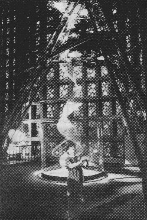

The Village Voice
25 April 1998
A group of second-graders from P.S.205 were chasing red spot-lights that darted across the floor, until, in a flash, they realised that the lights were actually chasing them. The red spots- called "flocking lights"- use infrared sensors to track light and activity, and once they find a subject, they swarm. It can be strange to be hunted by light, but here at the "LightForms" art exhibition in the cavernous Great Hall of Science of the New York Hall of Science in Flushing Meadows, brightness itself takes shape and turns watchful, alive.
Light, rather than ink or oils, is both palette and paintbrush in the international competition, organised by local group Art and Science Collaboration Inc. in conjunction with the museum, and sponsored by the lighting company USHIO and MIT Press journal Leonardo, among others. Proposals were required to meet three criteria: monumental scale, site specific design, and, most critically, interactivity. The three winning entries- the fiber optic installation Satori, the liquid column of Dark Matter, and the biofeedback experiment Lost Referential- are all electronically sophisticated, but viewers themselves are engines for the art.
Except that there's not a mouse or monitor in sight, subverting the traditional setup for interactive art…

You can't touch the 40- foot whirlwind coil of Dark Matter, but judging from the Plexiglas shield and viscous whipping noises, you wouldn't want to. Londoner Paul Friedlander creates an oscillating column of light by illuminating a spinning rope from above with a "chromastrobic" spotlight (donated by Pink Floyd) and a huge Fresnel lens to focus the light, using a turning wheel on the ground to send the chord into tight gyrations. Visitors who stand inside a small sensor field can adjust the speed of the wheel and therefore alter the "solidity" of the rope. It's no surprise that the school kids are drawn to this exhibit like flies- Friedlander was inspired to create the work by the ghost shapes produced by a swinging jump rope...
And if the Fresh Meadows exhibition seems in
exile from the gallery walls of Soho, it's a
welcome change. The projects share more with
the hands-on experiments in the hall's science
museum than with the static neon-tube
installations of artists like Dan Flavin. For
competition judge Donald Holder, who
designed the lights for the Broadway show The
Lion King, the exhibition pushes the overlooked
power of illumination to the forefront. ''In the
theater, light functions subliminally, but here light
is the principle of the art,'' he says. ''It's great
that it's being recognized.''
MACHINE AGE
BY AUSTIN BUNN
City Lights